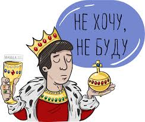

Что человеку нужно?
- 1. Что для тебя важнее всего в жизни?
- 1. Семья.
- 2. Удовольствие от жизни.
- 3. Близкие люди.
- 4. Дом.
- 5. Работа, семья.
- 2. Сколько людей должно быть в компании, чтобы всем было хорошо общаться?
- 1. 4 человека - 2 участника.
- 2. Минимум 5 человек. - 2 участника.
- 3. 3 человека. - 2 участника.
- 3. Нужен ли человеку домашний питомец?
- 1. Да - 5 участника.
- 2. Зависит от человека.
- 4. Человеку нужна проффесия с высокой з/п или та, которая ему нравится?
- 1. Которая нравится - 5 участника.
- 2. Можно найти компромисс между деньгами и удовольствие.

- 5. Может ли человек жить без общества?
- Нет - 6 участника.
- 6. Зачем человеку друзья?
- 1. Друг - человек, который поможет в трудную минуту жизни.
- 2. Чтобы было с кeм пообщаться.
- 3. Чтобы быть счастливым и поддерживать друг друга. - 2 участника
- 4. Поддержка, чувство нужности, реализация потребности в общения.
- 5. Саня сотку верни.

- 7. Как часто человек должен встречаться с друзьями?
- 1. Минимум раз в месяц.
- 2. Очень часто.
- 3. Пару раз в неделю. - 2 участника.
- 4. Как можно чаще.
- 5. Раз в неделю.
- 8. Человеку более нужны социальные или биологические потребности?
- 1. Социальные. - 2 участника.
- 2. -
- 3. Биологические - 2 участника.
- 4. Важны обе потребности.

- 9. Обязательно ли человеку развлекаться?
- Да - 6 участника.